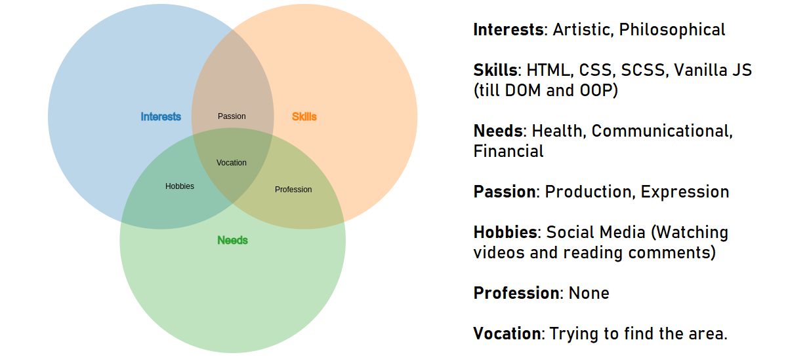

Welcome to My Venn Diagram!
I'm trying to visualize my career options with three circles that represent different sets and their intersections.

Here three circles represent these following components:
- Interests circle demonstrates artistic and philosophical interests, emphasizing creativity and deep thinking.
- Skills circle showcases technical skills alongside nutritional expertise, demonstrating a multidisciplinary approach.
- Needs circle encompasses financial and health needs, emphasizing effective communication for holistic solutions.
When the three circles overlap, it will give us a career option to choose. In this case, programming seems to be the best option to go with.
Cognitive Functions
The project mainly includes visualizations of using the MBTI cognitive functions. Here's a breakdown of the circles and their corresponding functions:
- First Circle: Fi (Introverted Feeling) represents an individual's inner values and personal ethics.
- Second Circle: Se (Extraverted Sensing) & Ni (Introverted Intuition). Se focuses on gathering concrete information from the environment in the present moment, while Ni helps recognize patterns and understand abstract concepts.
- Third Circle: Te (Extraverted Thinking) involves organizing and structuring the external world, making logical decisions, and achieving goals.

Intersections
By exploring the intersections of these circles, we unlock cognitive functions that showcases MBTI personality traits. So, the intersection of:
- the first and second circles gives rise to Fe (Extraverted Feeling), fostering empathy and harmonious interactions.
- the second and third circles reveals Si (Introverted Sensing), bringing attention to detail and practicality.
- the first and third circles uncovers Ti (Introverted Thinking), promoting logical analysis and problem-solving.
- all three circles represents Ne (Extroverted Intuition), encouraging innovation and exploration.
Conclusion
- Artistic and philosophical insights to drive innovative solutions.
- Technical skills applied in conjunction with nutritional expertise.
- Holistic approach addressing financial, health, and communication needs.
- Emphasis on empathy, attention to detail, logical analysis, and innovation.